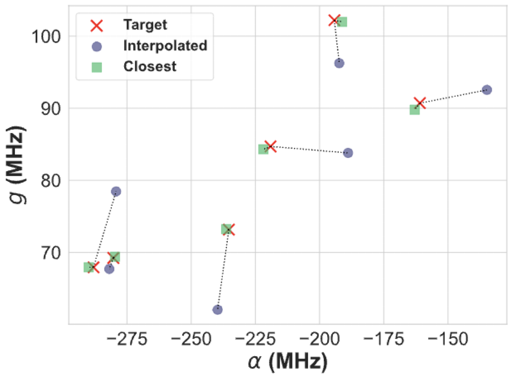
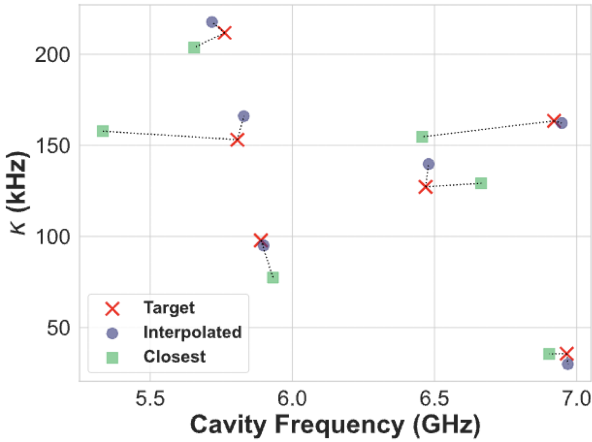

Tutorial 8: Machine Learning with SQuADDS#
In this tutorial, we will walk you through how to use SQuADDS to create ML interpolation solutions.
[1]:
%load_ext autoreload
%autoreload 2
[2]:
%matplotlib inline
Collecting Training Data from SQuADDS#
For this tutorial, we will be trying to predict the design space variables of a qubit-cavity system.
[3]:
from squadds import SQuADDS_DB, Analyzer
import pandas as pd
[4]:
db = SQuADDS_DB()
db.select_system(["qubit","cavity_claw"])
db.select_qubit("TransmonCross")
db.select_cavity_claw("RouteMeander")
db.select_resonator_type("quarter")
merged_df = db.create_system_df()
analyzer = Analyzer(db)
Recall that we need all Hamiltonian parameters to generate a complete training dataset. For this tutorial, I have chosen some demo targets to generate the training data.
[5]:
seed_data_df = pd.read_csv('data/seed_data.csv')
seed_data_df
[5]:
| cavity_frequency_GHz | kappa_kHz | g_MHz | anharmonicity_MHz | res_type | qubit_frequency_GHz | |
|---|---|---|---|---|---|---|
| 0 | 6.920735 | 163.433945 | 102.199270 | -194.264031 | quarter | 4.621651 |
| 1 | 6.468747 | 127.175543 | 67.947060 | -288.056418 | quarter | 5.514262 |
| 2 | 6.965297 | 35.666245 | 73.162768 | -235.346921 | quarter | 5.039644 |
| 3 | 5.806681 | 153.074402 | 90.698935 | -160.933514 | quarter | 4.241134 |
| 4 | 5.889439 | 97.823504 | 84.702197 | -219.068857 | quarter | 4.879756 |
| 5 | 5.762119 | 211.778480 | 69.241372 | -280.304835 | quarter | 5.448084 |
Now we generate the training data using this seed_df
[ ]:
from squadds.interpolations.utils import generate_qubit_cavity_training_data
training_df = generate_qubit_cavity_training_data(analyzer, seed_data_df,"data/training_data.parquet")
Time taken to add the coupled H params: 4.568953037261963 seconds
Target parameters have already been computed.
Target parameters have already been computed.
Target parameters have already been computed.
Target parameters have already been computed.
Target parameters have already been computed.
Training data saved to data/training_data.parquet
As we can see the training_df has information about both the design space variables (our targets) and its corresponding Hamiltonian parameters (our features).
Now, we are ready to train an ML model!
Preprocessing the Training Data#
Let’s first import the usual “suspects” in the ML world.
[1]:
import pandas as pd
import numpy as np
import matplotlib.pyplot as plt
import joblib
from huggingface_hub import hf_hub_download
import seaborn as sns
import joblib
import tensorflow as tf
from sklearn.model_selection import KFold
from sklearn.preprocessing import PolynomialFeatures, StandardScaler
from tensorflow.keras.callbacks import EarlyStopping, ModelCheckpoint
from tensorflow.keras.layers import BatchNormalization, Dense, Dropout
from tensorflow.keras.models import Sequential
from tensorflow.keras.optimizers import Adam
from sklearn.model_selection import train_test_split
from sklearn.metrics import r2_score
[2]:
%matplotlib inline
[3]:
training_df = pd.read_parquet("data/training_data.parquet")
training_df.head()
[3]:
| claw_length | cavity_frequency_GHz | kappa_kHz | EC | EJ | qubit_frequency_GHz | anharmonicity_MHz | g_MHz | cross_length | cross_gap | ground_spacing | coupling_length | total_length | |
|---|---|---|---|---|---|---|---|---|---|---|---|---|---|
| 0 | 160.0 | 8.963333 | 282.985474 | 0.119465 | 16.346243 | 3.829124 | -128.92902 | 52.250558 | 310.0 | 30.0 | 10.0 | 200.0 | 2700.0 |
| 1 | 160.0 | 6.911806 | 689.394209 | 0.119465 | 16.346243 | 3.829124 | -128.92902 | 40.291451 | 310.0 | 30.0 | 10.0 | 500.0 | 3400.0 |
| 2 | 160.0 | 8.968642 | 205.609615 | 0.119465 | 16.346243 | 3.829124 | -128.92902 | 52.281505 | 310.0 | 30.0 | 10.0 | 200.0 | 2700.0 |
| 3 | 160.0 | 6.767688 | 36.337103 | 0.119465 | 16.346243 | 3.829124 | -128.92902 | 39.451337 | 310.0 | 30.0 | 10.0 | 100.0 | 3900.0 |
| 4 | 160.0 | 6.576639 | 136.678808 | 0.119465 | 16.346243 | 3.829124 | -128.92902 | 38.337641 | 310.0 | 30.0 | 10.0 | 230.0 | 3900.0 |
Although there should not be any duplicates in the training data, we will remove them just in case.
[4]:
training_df = training_df.drop_duplicates()
# reset the index
training_df.reset_index(drop=True, inplace=True)
Now we can split the data into features (X - the Hamiltonian parameters) and targets (y - the design space variables).
[5]:
hamiltonian_parameters = ['qubit_frequency_GHz', 'anharmonicity_MHz', 'cavity_frequency_GHz', 'kappa_kHz', 'g_MHz']
design_parameters = ['cross_length', 'claw_length','coupling_length', 'total_length','ground_spacing']
[6]:
X = training_df[hamiltonian_parameters].values # Hamiltonian parameters
y = training_df[design_parameters].values # Design parameters
Now, we can split the data into training and testing sets.
[7]:
X_train, X_test, y_train, y_test = train_test_split(X, y, test_size=0.15)
Polynomial features help capture non-linear relationships by generating combinations of input features (\(n\)) raised to powers up to a specified degree (\(d\)).
The resulting feature set includes original features, squared terms, and interaction terms (size $ :nbsphinx-math:`binom{n+d}{d}`$), allowing linear models to fit more complex patterns.
We will use the PolynomialFeatures class from sklearn.preprocessing to generate polynomial features.
[8]:
poly = PolynomialFeatures(degree=3, include_bias=False)
X_train_poly = poly.fit_transform(X_train)
X_test_poly = poly.transform(X_test)
# Save the polynomial feature transformer
joblib.dump(poly, 'models/poly_transformer.pkl')
[8]:
['models/poly_transformer.pkl']
[9]:
X_train_poly.shape, X_train.shape
[9]:
((17268, 55), (17268, 5))
Finally, we need to normalize both the features and the target values. This ensures that all data is on the same scale, which helps the model learn more effectively. We use StandardScaler from sklearn.preprocessing to do this.
[10]:
# Normalize the data
scaler_X = StandardScaler()
scaler_y = StandardScaler()
X_train_poly = scaler_X.fit_transform(X_train_poly)
X_test_poly = scaler_X.transform(X_test_poly)
y_train = scaler_y.fit_transform(y_train)
y_test = scaler_y.transform(y_test)
# Save the scalers
joblib.dump(scaler_X, 'models/scaler_X.pkl')
joblib.dump(scaler_y, 'models/scaler_y.pkl')
[10]:
['models/scaler_y.pkl']
ML Model Training:#
Simple Deep Neural Network (DNN)#
We’ll begin with a simple deep neural network (DNN) to predict the design space variables (y) from the Hamiltonian parameters (X).
The model consists of three hidden layers:
256, 128, and 64 neurons, respectively.
Each layer uses ReLU activation.
To improve generalization and reduce overfitting:
Batch Normalization is applied after each layer.
Dropout (30%) is applied after each layer.
The output layer matches the number of design variables.
The optimizer used is Adam with a learning rate of 0.001, and the loss function is mean squared error.
[11]:
def simple_dnn_model(neurons1=256, neurons2=128, neurons3=64, learning_rate=0.001):
model = Sequential()
model.add(Dense(neurons1, input_dim=X_train_poly.shape[1], activation='relu'))
model.add(BatchNormalization())
model.add(Dropout(0.3))
model.add(Dense(neurons2, activation='relu'))
model.add(BatchNormalization())
model.add(Dropout(0.3))
model.add(Dense(neurons3, activation='relu'))
model.add(BatchNormalization())
model.add(Dropout(0.3))
model.add(Dense(y_train.shape[1])) # Output layer with the same number of neurons as output features
optimizer = Adam(learning_rate=learning_rate)
model.compile(optimizer=optimizer, loss='mean_squared_error')
return model
Now, we will train the DNN model on the training data for up to 500 epochs.
To ensure we save the best performing model, we have added a ModelCheckpoint callback that saves the model whenever the validation loss improves.
Additionally, we’ve added an EarlyStopping callback to stop training if the validation loss doesn’t improve for 10 consecutive epochs. This helps prevent overfitting and reduces unnecessary training time by restoring the model’s weights to the best epoch.
[12]:
# Define callbacks for early stopping and model checkpoint
model_checkpoint = ModelCheckpoint('models/simple_dnn.keras', save_best_only=True, monitor='val_loss', mode='min')
early_stopping = EarlyStopping(monitor='val_loss', patience=20, restore_best_weights=True, mode='min')
# Train the model on the entire training data with callbacks
dnn = simple_dnn_model()
history = dnn.fit(X_train_poly, y_train, epochs=500, batch_size=16, verbose=1, validation_split=0.2, callbacks=[model_checkpoint,early_stopping])
Epoch 1/500
/Users/shanto/anaconda3/envs/lfl_qp/lib/python3.9/site-packages/keras/src/layers/core/dense.py:87: UserWarning: Do not pass an `input_shape`/`input_dim` argument to a layer. When using Sequential models, prefer using an `Input(shape)` object as the first layer in the model instead.
super().__init__(activity_regularizer=activity_regularizer, **kwargs)
864/864 ━━━━━━━━━━━━━━━━━━━━ 2s 1ms/step - loss: 1.2538 - val_loss: 0.2215
Epoch 2/500
864/864 ━━━━━━━━━━━━━━━━━━━━ 1s 1ms/step - loss: 0.3658 - val_loss: 0.2076
Epoch 3/500
864/864 ━━━━━━━━━━━━━━━━━━━━ 1s 1ms/step - loss: 0.3165 - val_loss: 0.1932
Epoch 4/500
864/864 ━━━━━━━━━━━━━━━━━━━━ 1s 1ms/step - loss: 0.3095 - val_loss: 0.1919
Epoch 5/500
864/864 ━━━━━━━━━━━━━━━━━━━━ 1s 1ms/step - loss: 0.3045 - val_loss: 0.1836
Epoch 6/500
864/864 ━━━━━━━━━━━━━━━━━━━━ 1s 1ms/step - loss: 0.2983 - val_loss: 0.1706
Epoch 7/500
864/864 ━━━━━━━━━━━━━━━━━━━━ 1s 1ms/step - loss: 0.2852 - val_loss: 0.1619
Epoch 8/500
864/864 ━━━━━━━━━━━━━━━━━━━━ 1s 1ms/step - loss: 0.2758 - val_loss: 0.1492
Epoch 9/500
864/864 ━━━━━━━━━━━━━━━━━━━━ 1s 1ms/step - loss: 0.2726 - val_loss: 0.1491
Epoch 10/500
864/864 ━━━━━━━━━━━━━━━━━━━━ 1s 1ms/step - loss: 0.2683 - val_loss: 0.1467
Epoch 11/500
864/864 ━━━━━━━━━━━━━━━━━━━━ 1s 979us/step - loss: 0.2597 - val_loss: 0.1401
Epoch 12/500
864/864 ━━━━━━━━━━━━━━━━━━━━ 1s 1ms/step - loss: 0.2578 - val_loss: 0.1452
Epoch 13/500
864/864 ━━━━━━━━━━━━━━━━━━━━ 1s 1ms/step - loss: 0.2567 - val_loss: 0.1487
Epoch 14/500
864/864 ━━━━━━━━━━━━━━━━━━━━ 1s 974us/step - loss: 0.2587 - val_loss: 0.1421
Epoch 15/500
864/864 ━━━━━━━━━━━━━━━━━━━━ 1s 1ms/step - loss: 0.2580 - val_loss: 0.1428
Epoch 16/500
864/864 ━━━━━━━━━━━━━━━━━━━━ 1s 1ms/step - loss: 0.2557 - val_loss: 0.1320
Epoch 17/500
864/864 ━━━━━━━━━━━━━━━━━━━━ 1s 1ms/step - loss: 0.2503 - val_loss: 0.1301
Epoch 18/500
864/864 ━━━━━━━━━━━━━━━━━━━━ 1s 958us/step - loss: 0.2489 - val_loss: 0.1363
Epoch 19/500
864/864 ━━━━━━━━━━━━━━━━━━━━ 1s 1ms/step - loss: 0.2428 - val_loss: 0.1413
Epoch 20/500
864/864 ━━━━━━━━━━━━━━━━━━━━ 1s 1ms/step - loss: 0.2487 - val_loss: 0.1282
Epoch 21/500
864/864 ━━━━━━━━━━━━━━━━━━━━ 1s 1ms/step - loss: 0.2433 - val_loss: 0.1268
Epoch 22/500
864/864 ━━━━━━━━━━━━━━━━━━━━ 1s 994us/step - loss: 0.2437 - val_loss: 0.1316
Epoch 23/500
864/864 ━━━━━━━━━━━━━━━━━━━━ 1s 1ms/step - loss: 0.2468 - val_loss: 0.1222
Epoch 24/500
864/864 ━━━━━━━━━━━━━━━━━━━━ 1s 971us/step - loss: 0.2397 - val_loss: 0.1247
Epoch 25/500
864/864 ━━━━━━━━━━━━━━━━━━━━ 1s 990us/step - loss: 0.2391 - val_loss: 0.1283
Epoch 26/500
864/864 ━━━━━━━━━━━━━━━━━━━━ 1s 1ms/step - loss: 0.2468 - val_loss: 0.1281
Epoch 27/500
864/864 ━━━━━━━━━━━━━━━━━━━━ 1s 965us/step - loss: 0.2386 - val_loss: 0.1236
Epoch 28/500
864/864 ━━━━━━━━━━━━━━━━━━━━ 1s 963us/step - loss: 0.2347 - val_loss: 0.1255
Epoch 29/500
864/864 ━━━━━━━━━━━━━━━━━━━━ 1s 1ms/step - loss: 0.2354 - val_loss: 0.1253
Epoch 30/500
864/864 ━━━━━━━━━━━━━━━━━━━━ 1s 1ms/step - loss: 0.2368 - val_loss: 0.1185
Epoch 31/500
864/864 ━━━━━━━━━━━━━━━━━━━━ 1s 1ms/step - loss: 0.2338 - val_loss: 0.1224
Epoch 32/500
864/864 ━━━━━━━━━━━━━━━━━━━━ 1s 1ms/step - loss: 0.2325 - val_loss: 0.1174
Epoch 33/500
864/864 ━━━━━━━━━━━━━━━━━━━━ 1s 1ms/step - loss: 0.2370 - val_loss: 0.1186
Epoch 34/500
864/864 ━━━━━━━━━━━━━━━━━━━━ 1s 1ms/step - loss: 0.2336 - val_loss: 0.1194
Epoch 35/500
864/864 ━━━━━━━━━━━━━━━━━━━━ 1s 1ms/step - loss: 0.2312 - val_loss: 0.1070
Epoch 36/500
864/864 ━━━━━━━━━━━━━━━━━━━━ 1s 1ms/step - loss: 0.2335 - val_loss: 0.1076
Epoch 37/500
864/864 ━━━━━━━━━━━━━━━━━━━━ 1s 984us/step - loss: 0.2315 - val_loss: 0.1111
Epoch 38/500
864/864 ━━━━━━━━━━━━━━━━━━━━ 1s 986us/step - loss: 0.2294 - val_loss: 0.1064
Epoch 39/500
864/864 ━━━━━━━━━━━━━━━━━━━━ 1s 1ms/step - loss: 0.2278 - val_loss: 0.1067
Epoch 40/500
864/864 ━━━━━━━━━━━━━━━━━━━━ 1s 1ms/step - loss: 0.2292 - val_loss: 0.1029
Epoch 41/500
864/864 ━━━━━━━━━━━━━━━━━━━━ 1s 1ms/step - loss: 0.2280 - val_loss: 0.1029
Epoch 42/500
864/864 ━━━━━━━━━━━━━━━━━━━━ 1s 1ms/step - loss: 0.2262 - val_loss: 0.1059
Epoch 43/500
864/864 ━━━━━━━━━━━━━━━━━━━━ 1s 1ms/step - loss: 0.2232 - val_loss: 0.1036
Epoch 44/500
864/864 ━━━━━━━━━━━━━━━━━━━━ 1s 1ms/step - loss: 0.2254 - val_loss: 0.1028
Epoch 45/500
864/864 ━━━━━━━━━━━━━━━━━━━━ 1s 987us/step - loss: 0.2256 - val_loss: 0.0983
Epoch 46/500
864/864 ━━━━━━━━━━━━━━━━━━━━ 1s 1ms/step - loss: 0.2196 - val_loss: 0.1087
Epoch 47/500
864/864 ━━━━━━━━━━━━━━━━━━━━ 1s 1ms/step - loss: 0.2252 - val_loss: 0.0960
Epoch 48/500
864/864 ━━━━━━━━━━━━━━━━━━━━ 1s 1ms/step - loss: 0.2199 - val_loss: 0.0950
Epoch 49/500
864/864 ━━━━━━━━━━━━━━━━━━━━ 1s 1ms/step - loss: 0.2197 - val_loss: 0.0989
Epoch 50/500
864/864 ━━━━━━━━━━━━━━━━━━━━ 1s 1ms/step - loss: 0.2136 - val_loss: 0.0864
Epoch 51/500
864/864 ━━━━━━━━━━━━━━━━━━━━ 1s 1ms/step - loss: 0.2190 - val_loss: 0.0855
Epoch 52/500
864/864 ━━━━━━━━━━━━━━━━━━━━ 1s 1ms/step - loss: 0.2173 - val_loss: 0.0929
Epoch 53/500
864/864 ━━━━━━━━━━━━━━━━━━━━ 1s 1ms/step - loss: 0.2161 - val_loss: 0.0921
Epoch 54/500
864/864 ━━━━━━━━━━━━━━━━━━━━ 1s 1ms/step - loss: 0.2163 - val_loss: 0.0899
Epoch 55/500
864/864 ━━━━━━━━━━━━━━━━━━━━ 1s 965us/step - loss: 0.2132 - val_loss: 0.0953
Epoch 56/500
864/864 ━━━━━━━━━━━━━━━━━━━━ 1s 1ms/step - loss: 0.2152 - val_loss: 0.0817
Epoch 57/500
864/864 ━━━━━━━━━━━━━━━━━━━━ 1s 1ms/step - loss: 0.2143 - val_loss: 0.0974
Epoch 58/500
864/864 ━━━━━━━━━━━━━━━━━━━━ 1s 991us/step - loss: 0.2106 - val_loss: 0.0773
Epoch 59/500
864/864 ━━━━━━━━━━━━━━━━━━━━ 1s 1ms/step - loss: 0.2118 - val_loss: 0.0830
Epoch 60/500
864/864 ━━━━━━━━━━━━━━━━━━━━ 1s 949us/step - loss: 0.2094 - val_loss: 0.0944
Epoch 61/500
864/864 ━━━━━━━━━━━━━━━━━━━━ 1s 942us/step - loss: 0.2091 - val_loss: 0.0814
Epoch 62/500
864/864 ━━━━━━━━━━━━━━━━━━━━ 1s 1ms/step - loss: 0.2068 - val_loss: 0.0777
Epoch 63/500
864/864 ━━━━━━━━━━━━━━━━━━━━ 1s 958us/step - loss: 0.2132 - val_loss: 0.0791
Epoch 64/500
864/864 ━━━━━━━━━━━━━━━━━━━━ 1s 1ms/step - loss: 0.2052 - val_loss: 0.0856
Epoch 65/500
864/864 ━━━━━━━━━━━━━━━━━━━━ 1s 1ms/step - loss: 0.2118 - val_loss: 0.0732
Epoch 66/500
864/864 ━━━━━━━━━━━━━━━━━━━━ 1s 1ms/step - loss: 0.2070 - val_loss: 0.0744
Epoch 67/500
864/864 ━━━━━━━━━━━━━━━━━━━━ 1s 988us/step - loss: 0.2068 - val_loss: 0.0850
Epoch 68/500
864/864 ━━━━━━━━━━━━━━━━━━━━ 1s 986us/step - loss: 0.2067 - val_loss: 0.0784
Epoch 69/500
864/864 ━━━━━━━━━━━━━━━━━━━━ 1s 996us/step - loss: 0.2069 - val_loss: 0.0712
Epoch 70/500
864/864 ━━━━━━━━━━━━━━━━━━━━ 1s 966us/step - loss: 0.2029 - val_loss: 0.0740
Epoch 71/500
864/864 ━━━━━━━━━━━━━━━━━━━━ 1s 1ms/step - loss: 0.2055 - val_loss: 0.0757
Epoch 72/500
864/864 ━━━━━━━━━━━━━━━━━━━━ 1s 1ms/step - loss: 0.2061 - val_loss: 0.0763
Epoch 73/500
864/864 ━━━━━━━━━━━━━━━━━━━━ 1s 1ms/step - loss: 0.2016 - val_loss: 0.0786
Epoch 74/500
864/864 ━━━━━━━━━━━━━━━━━━━━ 1s 986us/step - loss: 0.2024 - val_loss: 0.0743
Epoch 75/500
864/864 ━━━━━━━━━━━━━━━━━━━━ 1s 954us/step - loss: 0.2066 - val_loss: 0.0781
Epoch 76/500
864/864 ━━━━━━━━━━━━━━━━━━━━ 1s 949us/step - loss: 0.2012 - val_loss: 0.0779
Epoch 77/500
864/864 ━━━━━━━━━━━━━━━━━━━━ 1s 974us/step - loss: 0.2064 - val_loss: 0.0752
Epoch 78/500
864/864 ━━━━━━━━━━━━━━━━━━━━ 1s 967us/step - loss: 0.2024 - val_loss: 0.0752
Epoch 79/500
864/864 ━━━━━━━━━━━━━━━━━━━━ 1s 1ms/step - loss: 0.2002 - val_loss: 0.0711
Epoch 80/500
864/864 ━━━━━━━━━━━━━━━━━━━━ 1s 1ms/step - loss: 0.2001 - val_loss: 0.0814
Epoch 81/500
864/864 ━━━━━━━━━━━━━━━━━━━━ 1s 1ms/step - loss: 0.2048 - val_loss: 0.0773
Epoch 82/500
864/864 ━━━━━━━━━━━━━━━━━━━━ 1s 1ms/step - loss: 0.2032 - val_loss: 0.0664
Epoch 83/500
864/864 ━━━━━━━━━━━━━━━━━━━━ 1s 975us/step - loss: 0.1995 - val_loss: 0.0711
Epoch 84/500
864/864 ━━━━━━━━━━━━━━━━━━━━ 1s 1ms/step - loss: 0.2018 - val_loss: 0.0858
Epoch 85/500
864/864 ━━━━━━━━━━━━━━━━━━━━ 1s 953us/step - loss: 0.1966 - val_loss: 0.0726
Epoch 86/500
864/864 ━━━━━━━━━━━━━━━━━━━━ 1s 964us/step - loss: 0.1973 - val_loss: 0.0765
Epoch 87/500
864/864 ━━━━━━━━━━━━━━━━━━━━ 1s 1ms/step - loss: 0.1980 - val_loss: 0.0697
Epoch 88/500
864/864 ━━━━━━━━━━━━━━━━━━━━ 1s 1ms/step - loss: 0.1992 - val_loss: 0.0597
Epoch 89/500
864/864 ━━━━━━━━━━━━━━━━━━━━ 1s 1ms/step - loss: 0.1910 - val_loss: 0.0690
Epoch 90/500
864/864 ━━━━━━━━━━━━━━━━━━━━ 1s 965us/step - loss: 0.1944 - val_loss: 0.0537
Epoch 91/500
864/864 ━━━━━━━━━━━━━━━━━━━━ 1s 1ms/step - loss: 0.1943 - val_loss: 0.0690
Epoch 92/500
864/864 ━━━━━━━━━━━━━━━━━━━━ 1s 1ms/step - loss: 0.1872 - val_loss: 0.0691
Epoch 93/500
864/864 ━━━━━━━━━━━━━━━━━━━━ 1s 1000us/step - loss: 0.1952 - val_loss: 0.0766
Epoch 94/500
864/864 ━━━━━━━━━━━━━━━━━━━━ 1s 960us/step - loss: 0.1982 - val_loss: 0.0550
Epoch 95/500
864/864 ━━━━━━━━━━━━━━━━━━━━ 1s 1ms/step - loss: 0.1977 - val_loss: 0.0763
Epoch 96/500
864/864 ━━━━━━━━━━━━━━━━━━━━ 1s 1ms/step - loss: 0.1976 - val_loss: 0.0701
Epoch 97/500
864/864 ━━━━━━━━━━━━━━━━━━━━ 1s 1ms/step - loss: 0.2009 - val_loss: 0.0732
Epoch 98/500
864/864 ━━━━━━━━━━━━━━━━━━━━ 1s 1ms/step - loss: 0.2029 - val_loss: 0.0662
Epoch 99/500
864/864 ━━━━━━━━━━━━━━━━━━━━ 1s 1ms/step - loss: 0.2033 - val_loss: 0.0655
Epoch 100/500
864/864 ━━━━━━━━━━━━━━━━━━━━ 1s 1ms/step - loss: 0.1995 - val_loss: 0.0712
Epoch 101/500
864/864 ━━━━━━━━━━━━━━━━━━━━ 1s 1ms/step - loss: 0.1979 - val_loss: 0.0622
Epoch 102/500
864/864 ━━━━━━━━━━━━━━━━━━━━ 1s 1ms/step - loss: 0.2070 - val_loss: 0.0848
Epoch 103/500
864/864 ━━━━━━━━━━━━━━━━━━━━ 1s 972us/step - loss: 0.2039 - val_loss: 0.0754
Epoch 104/500
864/864 ━━━━━━━━━━━━━━━━━━━━ 1s 1ms/step - loss: 0.2013 - val_loss: 0.0723
Epoch 105/500
864/864 ━━━━━━━━━━━━━━━━━━━━ 1s 1ms/step - loss: 0.2002 - val_loss: 0.0665
Epoch 106/500
864/864 ━━━━━━━━━━━━━━━━━━━━ 1s 1ms/step - loss: 0.1967 - val_loss: 0.0655
Epoch 107/500
864/864 ━━━━━━━━━━━━━━━━━━━━ 1s 1ms/step - loss: 0.1938 - val_loss: 0.0625
Epoch 108/500
864/864 ━━━━━━━━━━━━━━━━━━━━ 1s 957us/step - loss: 0.1964 - val_loss: 0.0719
Epoch 109/500
864/864 ━━━━━━━━━━━━━━━━━━━━ 1s 1ms/step - loss: 0.1930 - val_loss: 0.0703
Epoch 110/500
864/864 ━━━━━━━━━━━━━━━━━━━━ 1s 1ms/step - loss: 0.1893 - val_loss: 0.0655
Training Evaluation#
Let’s look at the training history to see how the model performed during training.
[13]:
history_df = pd.DataFrame(history.history)
history_df.to_csv('models/dnn_training_history.csv', index=False)
[14]:
# Plot training & validation loss values
plt.figure(figsize=(10, 5))
plt.plot(history.history['loss'], label='Train Loss')
plt.plot(history.history['val_loss'], label='Validation Loss')
plt.title('Model Loss')
plt.xlabel('Epoch')
plt.ylabel('Loss')
plt.legend(loc='upper right')
plt.savefig('figures/dnn_training_validation_loss.png')
plt.show()
Now, we can evaluate the model on the test data.
[15]:
# Evaluate on the test data
test_mse = dnn.evaluate(X_test_poly, y_test, verbose=0)
# Predictions
y_pred = dnn.predict(X_test_poly)
# Inverse transform the predictions and actual values to get them back to original scale
y_pred = scaler_y.inverse_transform(y_pred)
y_test = scaler_y.inverse_transform(y_test)
96/96 ━━━━━━━━━━━━━━━━━━━━ 0s 867us/step
[16]:
# Plot predicted vs actual values for each target variable
plt.figure(figsize=(15, 10))
for i in range(y_test.shape[1]):
plt.subplot(2, 3, i + 1)
plt.scatter(y_test[:, i], y_pred[:, i], alpha=0.5)
plt.plot([min(y_test[:, i]), max(y_test[:, i])], [min(y_test[:, i]), max(y_test[:, i])], 'r')
plt.title(f'Target Variable: {design_parameters[i]}')
plt.xlabel('Actual')
plt.ylabel('Predicted')
plt.grid(True)
plt.tight_layout()
plt.savefig('figures/dnn_predicted_vs_actual.png')
plt.show()
Cool to see that such a basic model can generally capture the trends in the data (sort of haha). Of course, we can always improve the model by tuning the hyperparameters, adding more data, or using more sophisticated models.
Let’s see how the model performs on some different data points so that we can compare it to the scaling interpolation algorithm and the closest simulation results. First, lets load the test dataframes.
[17]:
test_data = pd.read_csv(f"data/test_data.csv")
test_data
[17]:
| qubit_frequency_GHz | cavity_frequency_GHz | anharmonicity_MHz | kappa_kHz | g_MHz | |
|---|---|---|---|---|---|
| 0 | 4.621651 | 6.920735 | -194.264031 | 163.433945 | 102.199270 |
| 1 | 5.514262 | 6.468747 | -288.056418 | 127.175543 | 67.947060 |
| 2 | 5.039644 | 6.965297 | -235.346921 | 35.666245 | 73.162768 |
| 3 | 4.241134 | 5.806681 | -160.933514 | 153.074402 | 90.698935 |
| 4 | 4.879756 | 5.889439 | -219.068857 | 97.823504 | 84.702197 |
| 5 | 5.448084 | 5.762119 | -280.304835 | 211.778480 | 69.241372 |
Using the trained model to predict the design space variables for the test data.
[18]:
# Extract input features
X_test = test_data[hamiltonian_parameters].values
# Transform input features
X_test_poly = poly.transform(X_test)
X_test_poly = scaler_X.transform(X_test_poly)
# Make predictions with the DNN model
y_pred_dnn = scaler_y.inverse_transform(dnn.predict(X_test_poly))
# save the predictions for future use
np.savetxt("data/y_pred_dnn.csv", y_pred_dnn, delimiter=",")
1/1 ━━━━━━━━━━━━━━━━━━━━ 0s 10ms/step
Loading the corresponding scaling interpolation and closest simulation data points for comparison.
[19]:
interp_df = pd.read_csv("data/scaling_interp_data.csv", index_col=0)
interp_df.columns = ['total_length', 'coupling_length', 'cross_length', 'claw_length', 'Ej', 'ground_spacing']
# Sort to match the order of target_names
scaling_interp_pred = interp_df[design_parameters].values
[20]:
closest_df = pd.read_csv("data/closest_sim_data.csv", index_col=0)
closest_df.columns = ['total_length', 'coupling_length', 'cross_length', 'claw_length', 'ground_spacing', 'Ej']
# Sort to match the order of target_names
closest_results = closest_df[design_parameters].values
Moments of truth! Let’s see how the model performs compared to the scaling (physics) interpolation and closest simulation results.
[21]:
sns.set(style="whitegrid", font_scale=1.2)
colors = sns.color_palette("husl", 3) # Get a palette with 3 different hues
# Plot comparisons of predicted values
plt.figure(figsize=(12, 8))
for i, target_name in enumerate(design_parameters):
plt.subplot(2, 3, i + 1)
plt.plot(y_pred_dnn[:, i], label='ML', color=colors[0], linewidth=2)
plt.plot(scaling_interp_pred[:, i], label='Physics', color=colors[1], linewidth=2, linestyle='--')
plt.plot(closest_results[:, i], label='Closest', color=colors[2], linewidth=2, linestyle='-.')
plt.ylabel(r'$\mu m$', fontsize=16)
# Adding title and customizing fonts
plt.title(f'{target_name}', fontsize=20, weight='bold')
plt.xlabel('Targets', fontsize=16)
# Improve legends
plt.legend(loc='upper left', fontsize=12, fancybox=True, framealpha=0.5)
# Adding grid and minor ticks for better readability
plt.grid(True, which='both', linestyle='--', linewidth=0.5)
plt.minorticks_on()
plt.tight_layout()
plt.savefig('figures/comparison_predicted_values.png')
plt.show()
Simulate and Benchmark the ML Model#
To truly evaluate the model’s performance, we need to simulate the qubit-cavity system using the predicted design space variables and compute the corresponding Hamiltonian parameters and see how they compare to the target Hamiltonian parameters.
[1]:
%load_ext autoreload
%autoreload 2
[2]:
import numpy as np
import pandas as pd
import matplotlib.pyplot as plt
from squadds import SQuADDS_DB, Analyzer
[3]:
%matplotlib inline
[4]:
db = SQuADDS_DB()
db.select_system(["qubit","cavity_claw"])
db.select_qubit("TransmonCross")
db.select_cavity_claw("RouteMeander")
db.select_resonator_type("quarter")
merged_df = db.create_system_df()
analyzer = Analyzer(db)
[5]:
y_pred_dnn = np.loadtxt("data/y_pred_dnn.csv", delimiter=",")
[6]:
test_data = pd.read_csv(f"data/test_data.csv")
Using the following method to extract the designs_df that we will use to simulate the qubit-cavity system.
[7]:
from squadds.interpolations.utils import get_design_from_ml_predictions
designs_df = get_design_from_ml_predictions(analyzer, test_data, y_pred_dnn)
designs_df
Time taken to add the coupled H params: 3.9641311168670654 seconds
[7]:
| coupler_type | design_options_qubit | design_options_cavity_claw | setup_qubit | setup_cavity_claw | design_options | |
|---|---|---|---|---|---|---|
| 0 | CLT | {'aedt_hfss_capacitance': 0, 'aedt_hfss_induct... | {'claw_opts': {'connection_pads': {'readout': ... | {'auto_increase_solution_order': True, 'enable... | {'basis_order': 1, 'max_delta_f': 0.05, 'max_p... | {'cavity_claw_options': {'coupler_type': 'CLT'... |
| 1 | CLT | {'aedt_hfss_capacitance': 0, 'aedt_hfss_induct... | {'claw_opts': {'connection_pads': {'readout': ... | {'auto_increase_solution_order': True, 'enable... | {'basis_order': 1, 'max_delta_f': 0.05, 'max_p... | {'cavity_claw_options': {'coupler_type': 'CLT'... |
| 2 | CLT | {'aedt_hfss_capacitance': 0, 'aedt_hfss_induct... | {'claw_opts': {'connection_pads': {'readout': ... | {'auto_increase_solution_order': True, 'enable... | {'basis_order': 1, 'max_delta_f': 0.05, 'max_p... | {'cavity_claw_options': {'coupler_type': 'CLT'... |
| 3 | CLT | {'aedt_hfss_capacitance': 0, 'aedt_hfss_induct... | {'claw_opts': {'connection_pads': {'readout': ... | {'auto_increase_solution_order': True, 'enable... | {'basis_order': 1, 'max_delta_f': 0.05, 'max_p... | {'cavity_claw_options': {'coupler_type': 'CLT'... |
| 4 | CLT | {'aedt_hfss_capacitance': 0, 'aedt_hfss_induct... | {'claw_opts': {'connection_pads': {'readout': ... | {'auto_increase_solution_order': True, 'enable... | {'basis_order': 1, 'max_delta_f': 0.05, 'max_p... | {'cavity_claw_options': {'coupler_type': 'CLT'... |
| 5 | CLT | {'aedt_hfss_capacitance': 0, 'aedt_hfss_induct... | {'claw_opts': {'connection_pads': {'readout': ... | {'auto_increase_solution_order': True, 'enable... | {'basis_order': 1, 'max_delta_f': 0.05, 'max_p... | {'cavity_claw_options': {'coupler_type': 'CLT'... |
Ansys Simulation#
Now to simulate each design in the designs_df in Ansys and extract the Hamiltonian parameters.
[ ]:
from squadds import AnsysSimulator
[ ]:
H_params_simmed = []
for index, row in designs_df.iterrows():
print(f"Simulating design {index}")
df = designs_df.iloc[index]
ansys_simulator = AnsysSimulator(analyzer, df)
ansys_results = ansys_simulator.simulate(df)
hamiltonian_results = ansys_results["sim_results"]
H_params_simmed.append(hamiltonian_results)
For the model used in this example but with its hyperparameters optimized, I was able to get the following results


palace Simulations#
If you don’t have access to Ansys, you can use the palace simulator to simulate the qubit-cavity system. We cover how to use palace in Tutorial 7.
We are actively working on developing robust, accurate, and stable simulations using the palace backend in collaboration with our friends at the SQDLab.
In the meantime, we encourage you to explore palace on your own with the following resources:
Palace Documentation: Official documentation for the
palacesimulator.Palace Installation Guide: Step-by-step instructions on how to install
palaceon all platforms.Palace Simulation with Qiskit Metal: A simulation framework for using
palacefromqiskit-metal.SQDMetal Example workflow with Palace: A worked example of using
palacewithqiskit-metalto run eigenmode and capacitance simulations.
These resources should help you get started with palace and enable you to perform simulations effectively until our enhanced integration is ready. Consider contributing to SQDMetal and SQuADDS to help us improve the palace integration!
COMSOL Simulation#
You can also use SQDMetal to run the simulations in COMSOL as well. Read more about it here
Deploy the ML Model to HuggingFace#
Once you have developed a model that you are happy with and ideally performs really well, you can deploy it to HuggingFace for others to use.
HuggingFace makes it ridiculously easy to deploy an ML model. All you need to do is:
Load the model.
Save the model in the format required by HuggingFace.
model.save(f"hf://{hf_username}/{model_name}")
[ ]:
from tensorflow.keras.models import load_model
model_dnn = load_model("models/simple_dnn.keras")
model_dnn.save("hf://shanto268/qiskit-fall-fest-2024-test-model")
If your model is REALLYYYYY good, then send me an email with the link to your model and I will add it to the SQuADDS ML model collection.
Next Steps…#
Please contribute to SQuADDS!
License#
This code is a part of SQuADDS
Developed by Sadman Ahmed Shanto
This tutorial is written by Sadman Ahmed Shanto
© Copyright Sadman Ahmed Shanto & Eli Levenson-Falk 2025.
This code is licensed under the MIT License. You may obtain a copy of this license in the LICENSE.txt file in the root directory of this source tree.
Any modifications or derivative works of this code must retain thiscopyright notice, and modified files need to carry a notice indicatingthat they have been altered from the originals.